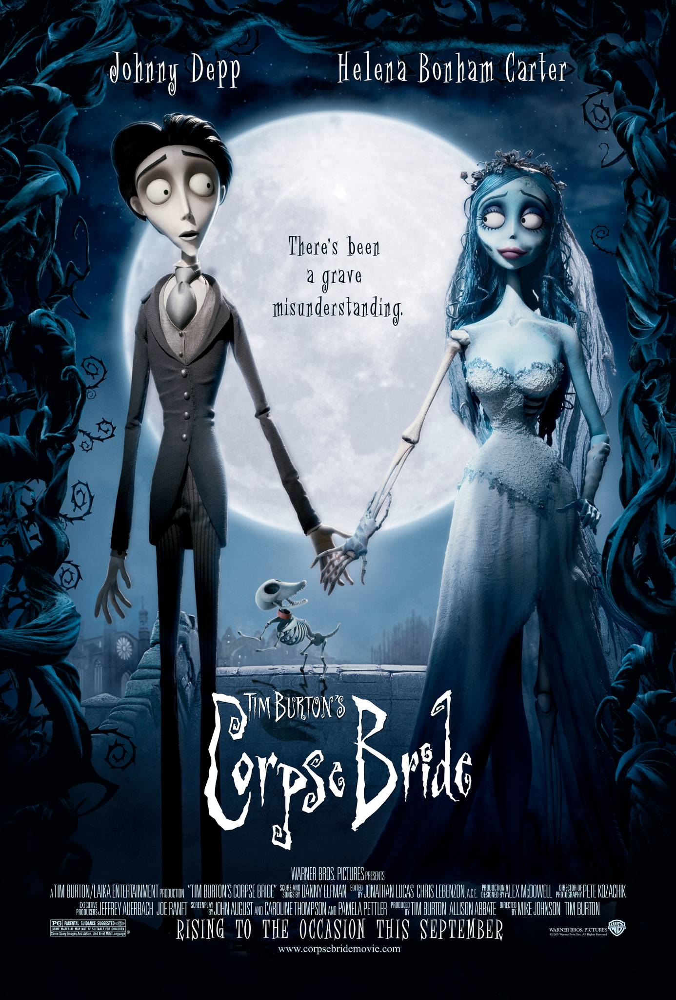

Corpse Bride
Movie poster from IMDb (link below)
Gothic Romance Meets Animation
Corpse Bride is Tim Burton's hauntingly beautiful stop-motion masterpiece that blends dark themes with heartfelt storytelling. The film creates a world where death is more vibrant than life, filled with skeletal musicians and ghostly celebrations. Its gothic aesthetic perfectly captures the beauty found in darkness.
Memorable Aspects
- Stunning stop-motion animation
- A love story that signifies life and death
- Great musical parts
- Beautiful contrast between the drab living and colorful dead
Film Information
- Director
- Tim Burton and Mike Johnson
- Release Year
- 2005
- Central Message
- Death is not the end, and true love knows no boundaries
Visit Corpse Bride on IMDb to explore this gothic fairy tale.